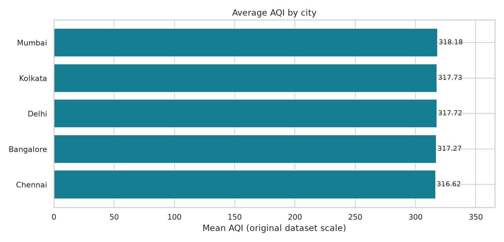
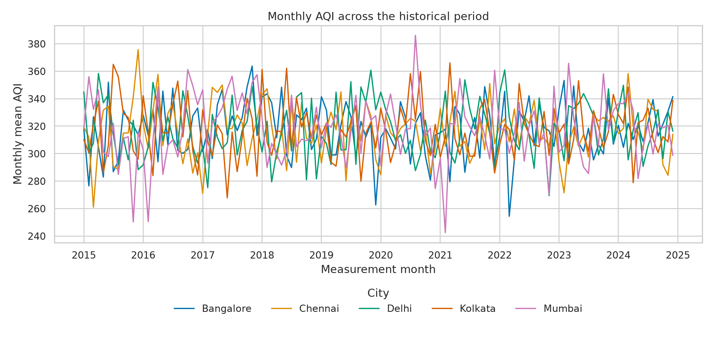
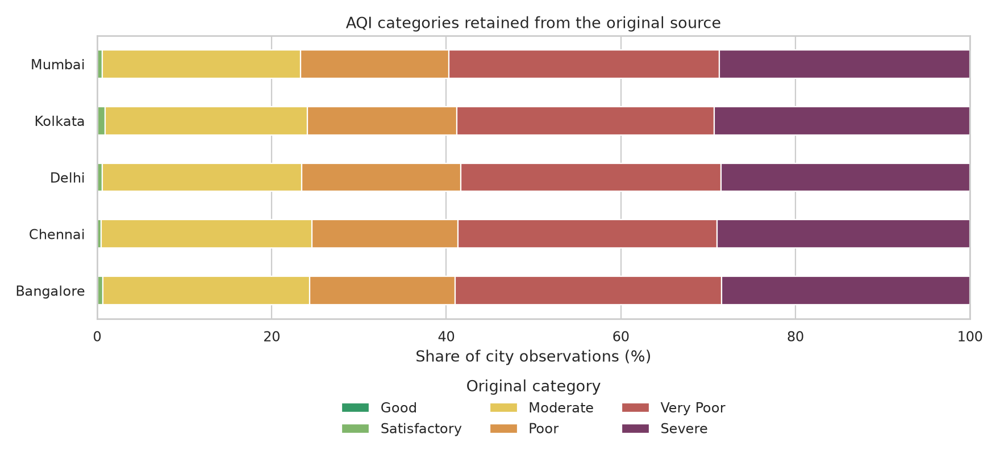
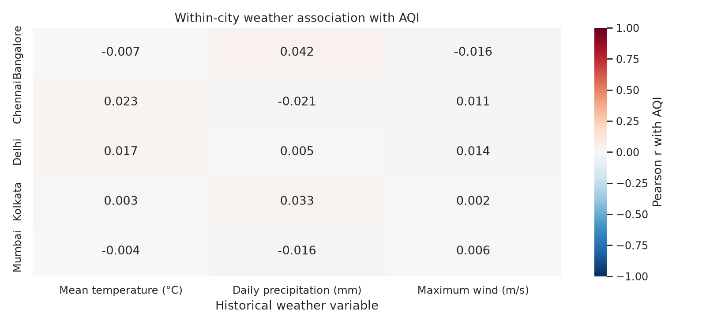

Air quality and weather in India
A static analytical view of 18,265 validated city-day measurements across 5 cities.
This report supports historical comparison and review of the enriched data. It is a point-in-time output generated with Python after data-quality approval. The operational prediction dashboard is a separate application driven by the Kafka consumer.
1. Which cities have the highest average AQI?
Mumbai has the highest mean AQI (318.18); Chennai has the lowest (316.62). The difference is 1.57 AQI points. The overall mean is 317.51.

| City | Observations | Mean AQI | Median AQI |
|---|---|---|---|
| Mumbai | 3653 | 318.18 | 332.50 |
| Kolkata | 3653 | 317.73 | 330.60 |
| Delhi | 3653 | 317.72 | 331.50 |
| Bangalore | 3653 | 317.27 | 332.00 |
| Chennai | 3653 | 316.62 | 331.40 |
These averages describe this dataset and period. They do not establish a ranking of current conditions or the exposure of individual residents.
2. How does AQI change across months?
The highest city-month average is 386.11 in Mumbai (2020-08); the lowest is 242.45 in Mumbai (2021-02). These are historical monthly averages, not individual daily extremes.

The monthly series preserves variation hidden by a single city average. The exported monthly_aqi.csv makes every plotted point reproducible. Aggregation uses actual observations by calendar month and city; no observations are invented or interpolated.
3. How frequent are the original AQI categories?
Very Poor and Severe together account for 58.9% of observations. These labels are retained from the original dataset and are not recalculated with a different country's AQI thresholds.

4. Is historical weather associated with AQI?
The largest absolute within-city Pearson correlation is 0.042. These weak linear associations do not support a strong weather-only explanation or forecast of AQI.

Correlations are calculated separately within each city to avoid interpreting differences between locations as a daily relationship. Association does not demonstrate causation; low Pearson correlation does not exclude every nonlinear relationship.
5. How well does the next-day prediction model perform?
Selected model: ridge. Artifact version: 90b6dd4d28661a89.
The target is next-day AQI for the same city. Features use only information available through the preceding day. Training uses 2015-2021, model selection uses 2022, and the final model is fitted on 2015-2022. The held-out test period is 2023-2024.
| Model / reference | mae | rmse | r2 |
|---|---|---|---|
| selected_model | 98.7733 | 114.1729 | -0.0015 |
| mean_baseline | 98.6803 | 114.0930 | -0.0001 |
| persistence_baseline | 132.8741 | 162.5509 | -1.0301 |
The fitted model does not improve test MAE over the constant development-mean baseline. This experiment demonstrates the inference architecture, but does not establish useful next-day forecasting skill.
MAE and RMSE are measured in AQI points; smaller values indicate lower error. R² compares performance with the test-set mean and may be negative. Mean and persistence references must be considered before claiming predictive value.
- Academic next-day prediction experiment, not a validated public warning system.
- The original Kaggle source does not establish measurement units or station provenance for every pollutant.
- ERA5 weather is historical reanalysis; only weather from the origin day enters a forecast event.
- Daily timestamps are assumed to represent local days in India, consistent with the earlier ETL.
- Weak associations and weak temporal persistence can limit accuracy; baseline comparisons are reported even when superior.
- The stream replays historical validated observations; event creation time is distinct from the historical observation date.
- The fitted model uses target dates through 2022 only; demo forecasts for 2023-24 are chronologically out of training.
This section describes offline evaluation. Incoming Kafka predictions belong to the separate live dashboard.
6. Data quality, provenance and limits
Air measurements originate from the first delivery's Kaggle dataset. Wikipedia coordinates identify the five cities and link them to historical ERA5 weather obtained through Open-Meteo. ERA5 represents reanalysis grid cells, not a colocated pollution-monitoring station.
Airflow joins the sources, executes Great Expectations, and blocks the analytical load when critical checks fail. This report verifies successful approval metadata, reconciles each active run's row count, rejects duplicate or missing keys and incomplete daily coverage, and reads the database in one consistent transaction.
The source does not document every pollutant unit. Original dates are interpreted as local days in India; that assumption needs source confirmation before claiming exact temporal alignment. The historical source and weak associations limit the operational interpretation of model predictions.
7. Analytical and operational value
The dimensional model enables reproducible city and time comparisons, quality auditing and offline model evaluation. The Kafka path demonstrates a separate operational process: validated historical records are replayed as events, the consumer applies one fitted model, and the live dashboard updates with its predictions. Historical replay is explicitly a simulation.